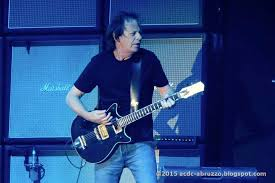

Com o lançamento no dia 28 de novembro de 2014 na Austrália, e no dia 02 de dezembro em outros países, “Rock or Bust” marca o primeiro lançamento de estúdio desde “Black Ice” de 2008.
“Rock or Bust” é o primeiro disco sem o membro fundador e guitarrista Malcolm Young, que deixou a banda em 2014 por motivos de saúde.
Durante a gravação do álbum, Brian Johnson admitiu que fazer o disco sem Malcolm Young era bastante difícil. Johnson havia sugerido aos membros da banda o nome “Man Down” para o disco, mas não gostaram pois esse título soaria muito negativo.
Em 2015, a banda fez uma turnê mundial para promover o disco “Rock or Bust” e comemorou o aniversário de 40 anos da banda. Malcolm Young foi substituido por seu sobrinho, Stevie Young.
Brian Johnson nasceu em 5 de Outubro de 1947 é um cantor Inglês e compositor que desde 1980, tem sido o vocalista do AC/DC. Em 1972, Brian Johnson tornou-se um dos membros
fundadores da banda de glam rock, “Geordie”. Mas assim que assinaram um novo contrato com uma gravadora, Brian Johnson foi convidado para a audição do AC/DC, cujo vocalista, Bon Scott, havia falecido.
Angus McKinnon Young (31 de março de 1955, em Glasgow, Escócia) é guitarrista solo, compositor, líder e co-fundador da banda AC/DC.
No ano de 2003, foi introduzido juntamente de Malcolm Young, Brian Johnson e outros membros do AC/DC no Rock and Roll Hall of Fame.
Foi considerado o 24.º melhor guitarrista de todos os tempos pela revista norte-americana Rolling Stone. Um dos maiores guitarristas da história do Rock and Roll e considerado pela grande maioria o maior riffer de todos os tempos.
 Stephen Crawford Young (Glasgow, 11 de dezembro de 1956) é um guitarrista escocês da banda de hard rock AC/DC, tendo entrado no lugar do seu tio Malcolm Young, que deixou
o grupo por problemas de saúde
Durante a turnê estadunidense de 1988 do álbum Blow Up Your Video, que começou em 3 de maio daquele ano, Stevie substituiu Malcolm na guitarra para que o tio pudesse tratar de sua dependência do álcool. Muitos fãs sequer perceberam que não era Malcolm
que estava tocando, dada a semelhança física entre os dois.
Clifford Williams nasceu no dia 14 de Dezembro de 1949 é um baixista Inglês, conhecido por tocar pelo AC/DC desde Junho de 1977
Phil Rudd (Melbourne, Austrália - 19 de maio de 1954), também conhecido como Adami, é um baterista australiano, membro da banda AC/DC. Entrou em 1975 na banda e ficou
nesta até 1983, quando houve um desentendimento com Malcolm Young e após esse episódio, ele saiu do AC/DC. Outro motivo associado à sua saída foram os vícios de drogas e bebidas.
 Brian Johnson nasceu em 5 de Outubro de 1947 é um cantor Inglês e compositor que desde 1980, tem sido o vocalista do AC/DC. Em 1972, Brian Johnson tornou-se um dos membros
fundadores da banda de glam rock, “Geordie”. Mas assim que assinaram um novo contrato com uma gravadora, Brian Johnson foi convidado para a audição do AC/DC, cujo vocalista, Bon Scott, havia falecido.
Brian Johnson nasceu em 5 de Outubro de 1947 é um cantor Inglês e compositor que desde 1980, tem sido o vocalista do AC/DC. Em 1972, Brian Johnson tornou-se um dos membros
fundadores da banda de glam rock, “Geordie”. Mas assim que assinaram um novo contrato com uma gravadora, Brian Johnson foi convidado para a audição do AC/DC, cujo vocalista, Bon Scott, havia falecido.
 Angus McKinnon Young (31 de março de 1955, em Glasgow, Escócia) é guitarrista solo, compositor, líder e co-fundador da banda AC/DC.
Angus McKinnon Young (31 de março de 1955, em Glasgow, Escócia) é guitarrista solo, compositor, líder e co-fundador da banda AC/DC.
 Clifford Williams nasceu no dia 14 de Dezembro de 1949 é um baixista Inglês, conhecido por tocar pelo AC/DC desde Junho de 1977
Clifford Williams nasceu no dia 14 de Dezembro de 1949 é um baixista Inglês, conhecido por tocar pelo AC/DC desde Junho de 1977
 Phil Rudd (Melbourne, Austrália - 19 de maio de 1954), também conhecido como Adami, é um baterista australiano, membro da banda AC/DC. Entrou em 1975 na banda e ficou
nesta até 1983, quando houve um desentendimento com Malcolm Young e após esse episódio, ele saiu do AC/DC. Outro motivo associado à sua saída foram os vícios de drogas e bebidas.
Phil Rudd (Melbourne, Austrália - 19 de maio de 1954), também conhecido como Adami, é um baterista australiano, membro da banda AC/DC. Entrou em 1975 na banda e ficou
nesta até 1983, quando houve um desentendimento com Malcolm Young e após esse episódio, ele saiu do AC/DC. Outro motivo associado à sua saída foram os vícios de drogas e bebidas.